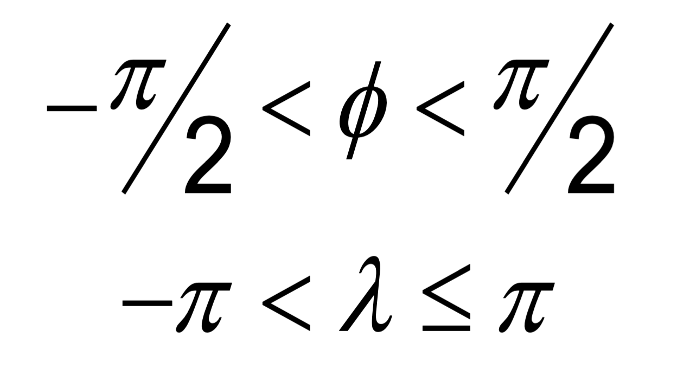
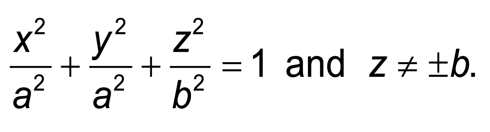

Open Geospatial Consortium |
Submission Date: 2018-03-20 |
Approval Date: 2018-08-27 |
Publication Date: 2018-dd-mm |
External identifier of this OGC® document: http://www.opengis.net/doc/BP/CDB-SRF/1.1 |
Internal reference number of this OGC® document: 16-011r4 |
Version: 1.1 |
Category: OGC® Best Practice |
Editor: Carl Reed |
Volume 8: CDB Spatial and Coordinate Reference Systems Guidance |
Copyright notice |
Copyright © 2018 Open Geospatial Consortium |
To obtain additional rights of use, visit http://www.opengeospatial.org/legal/ |
Warning |
This document is not an OGC Standard. This document is distributed for review and comment. This document is subject to change without notice and may not be referred to as an OGC Standard.
Recipients of this document are invited to submit, with their comments, notification of any relevant patent rights of which they are aware and to provide supporting documentation.
Document type: OGC® Best Practice |
Document subtype: if applicable |
Document stage: Draft |
Document language: English |
License Agreement
Permission is hereby granted by the Open Geospatial Consortium, ("Licensor"), free of charge and subject to the terms set forth below, to any person obtaining a copy of this Intellectual Property and any associated documentation, to deal in the Intellectual Property without restriction (except as set forth below), including without limitation the rights to implement, use, copy, modify, merge, publish, distribute, and/or sublicense copies of the Intellectual Property, and to permit persons to whom the Intellectual Property is furnished to do so, provided that all copyright notices on the intellectual property are retained intact and that each person to whom the Intellectual Property is furnished agrees to the terms of this Agreement.
If you modify the Intellectual Property, all copies of the modified Intellectual Property must include, in addition to the above copyright notice, a notice that the Intellectual Property includes modifications that have not been approved or adopted by LICENSOR.
THIS LICENSE IS A COPYRIGHT LICENSE ONLY, AND DOES NOT CONVEY ANY RIGHTS UNDER ANY PATENTS THAT MAY BE IN FORCE ANYWHERE IN THE WORLD.
THE INTELLECTUAL PROPERTY IS PROVIDED "AS IS", WITHOUT WARRANTY OF ANY KIND, EXPRESS OR IMPLIED, INCLUDING BUT NOT LIMITED TO THE WARRANTIES OF MERCHANTABILITY, FITNESS FOR A PARTICULAR PURPOSE, AND NONINFRINGEMENT OF THIRD PARTY RIGHTS. THE COPYRIGHT HOLDER OR HOLDERS INCLUDED IN THIS NOTICE DO NOT WARRANT THAT THE FUNCTIONS CONTAINED IN THE INTELLECTUAL PROPERTY WILL MEET YOUR REQUIREMENTS OR THAT THE OPERATION OF THE INTELLECTUAL PROPERTY WILL BE UNINTERRUPTED OR ERROR FREE. ANY USE OF THE INTELLECTUAL PROPERTY SHALL BE MADE ENTIRELY AT THE USER’S OWN RISK. IN NO EVENT SHALL THE COPYRIGHT HOLDER OR ANY CONTRIBUTOR OF INTELLECTUAL PROPERTY RIGHTS TO THE INTELLECTUAL PROPERTY BE LIABLE FOR ANY CLAIM, OR ANY DIRECT, SPECIAL, INDIRECT OR CONSEQUENTIAL DAMAGES, OR ANY DAMAGES WHATSOEVER RESULTING FROM ANY ALLEGED INFRINGEMENT OR ANY LOSS OF USE, DATA OR PROFITS, WHETHER IN AN ACTION OF CONTRACT, NEGLIGENCE OR UNDER ANY OTHER LEGAL THEORY, ARISING OUT OF OR IN CONNECTION WITH THE IMPLEMENTATION, USE, COMMERCIALIZATION OR PERFORMANCE OF THIS INTELLECTUAL PROPERTY.
This license is effective until terminated. You may terminate it at any time by destroying the Intellectual Property together with all copies in any form. The license will also terminate if you fail to comply with any term or condition of this Agreement. Except as provided in the following sentence, no such termination of this license shall require the termination of any third party end-user sublicense to the Intellectual Property which is in force as of the date of notice of such termination. In addition, should the Intellectual Property, or the operation of the Intellectual Property, infringe, or in LICENSOR’s sole opinion be likely to infringe, any patent, copyright, trademark or other right of a third party, you agree that LICENSOR, in its sole discretion, may terminate this license without any compensation or liability to you, your licensees or any other party. You agree upon termination of any kind to destroy or cause to be destroyed the Intellectual Property together with all copies in any form, whether held by you or by any third party.
Except as contained in this notice, the name of LICENSOR or of any other holder of a copyright in all or part of the Intellectual Property shall not be used in advertising or otherwise to promote the sale, use or other dealings in this Intellectual Property without prior written authorization of LICENSOR or such copyright holder. LICENSOR is and shall at all times be the sole entity that may authorize you or any third party to use certification marks, trademarks or other special designations to indicate compliance with any LICENSOR standards or specifications. This Agreement is governed by the laws of the Commonwealth of Massachusetts. The application to this Agreement of the United Nations Convention on Contracts for the International Sale of Goods is hereby expressly excluded. In the event any provision of this Agreement shall be deemed unenforceable, void or invalid, such provision shall be modified so as to make it valid and enforceable, and as so modified the entire Agreement shall remain in full force and effect. No decision, action or inaction by LICENSOR shall be construed to be a waiver of any rights or remedies available to it.
- 1. Scope
- 2. Conformance
- 3. References
- 4. Terms and Definitions
- 5. Conventions
- 6. CDB Approach
- 7. The Three Systems
- Annex A: Revision History
- Annex B: Bibliography
i. Abstract
Volume 8 of the CDB standard defines the conceptual model and the methodologies that allow the description, and transformation or conversion, of geometric properties within a set of spatial reference frames supported by the CDB standard. The CDB Spatial Reference Model (SRM) supports an unambiguous specification of the positions, directions, and distances associated with spatial information. This document also defines algorithms for precise transformation of positions, directions and distances among different spatial reference frames.
In previous versions of the CDB standard, this CDB volume was Appendix K in CDB Version 3.2 as submitted to the OGC.
ii. Keywords
The following are keywords to be used by search engines and document catalogues.
ogcdoc, OGC document, ogcdoc, cdb, spatial reference model, srm, coordinate systems, crs, srs
iii. Preface
Attention is drawn to the possibility that some of the elements of this document may be the subject of patent rights. The Open Geospatial Consortium shall not be held responsible for identifying any or all such patent rights.
Recipients of this document are requested to submit, with their comments, notification of any relevant patent claims or other intellectual property rights of which they may be aware that might be infringed by any implementation of the standard set forth in this document, and to provide supporting documentation.
iv. Submitting organizations
The following organizations submitted this Document to the Open Geospatial Consortium (OGC):
Organization name(s)
-
CAE Inc.
-
Carl Reed, OGC Individual Member
-
Envitia, Ltd
-
Glen Johnson, OGC Individual Member
-
KaDSci, LLC
-
Laval University
-
Open Site Plan
-
University of Calgary
-
UK Met Office
The OGC CDB standard is based on and derived from an industry developed and maintained specification, which has been approved and published as OGC Document 15-003: OGC Common DataBase Volume 1 Main Body. An extensive listing of contributors to the legacy industry-led CDB specification is at Chapter 11, pp 475-476 in that OGC Best Practices Document (https://portal.opengeospatial.org/files/?artifact_id=61935 ).
v. Submitters
All questions regarding this submission should be directed to the editor or the submitters:
Name |
Affiliation |
Carl Reed |
Carl Reed & Associates |
David Graham |
CAE Inc. |
vi. Document Organization
For ease of editing and review, the standard has been separated into 12 Volumes and a schema repository.
-
Volume 0: OGC CDB Companion Primer for the CDB standard. (Best Practice)
-
Volume 1: OGC CDB Core Standard: Model and Physical Data Store Structure. The main body (core) of the CDB standard (Normative).
-
Volume 2: OGC CDB Core Model and Physical Structure Annexes (Best Practice).
-
Volume 3: OGC CDB Terms and Definitions (Normative).
-
Volume 4: OGC CDB Use of Shapefiles for Vector Data Storage (Best Practice).
-
Volume 5: OGC CDB Radar Cross Section (RCS) Models (Best Practice).
-
Volume 6: OGC CDB Rules for Encoding Data using OpenFlight (Best Practice).
-
Volume 7: OGC CDB Data Model Guidance (Best Practice).
-
Volume 8: OGC CDB Spatial Reference System Guidance (Best Practice).
-
Volume 9: OGC CDB Schema Package: provides the normative schemas for key features types required in the synthetic modelling environment. Essentially, these schemas are designed to enable semantic interoperability within the simulation context. (Normative)
-
Volume 10: OGC CDB Implementation Guidance (Best Practice).
-
Volume 11: OGC CDB Core Standard Conceptual Model (Normative)
-
Volume 12: OGC CDB Navaids Attribution and Navaids Attribution Enumeration Values (Best Practice)
1. Scope
The handling of spatial data requires a good deal of rigor to accurately describe the position of points in space. Furthermore, it requires the ability to define directions and distances. Generally, this is accomplished through the use of coordinate systems.
A coordinate system (also called a spatial reference system) is a means of assigning coordinates to a location and establishing relationships between sets of such coordinates. Specifying a coordinate reference system enables the interpretation of a set of coordinates as a representation of a position in a real world space.
In the CDB standard, these terms can be used interchangeably. However, for consistency with previous versions of the CDB standard, the term spatial reference system (SRS) is used.
There is often the requirement to represent position in several different spatial reference systems. Each spatial reference system provides a particular way of defining positions within its domain. This level of abstraction also permits spatial reference systems to be decomposed into a series of, or even a hierarchy of reference, each relative to another reference system. This mechanism permits objects to be independently defined (positioned, oriented, and scaled) with respect to a local SRS and then be later incorporated into other reference systems. The reference systems can be abstract mathematical constructs or they can be bound to real world objects (e.g., a flap located defined in a flap reference system which in turn is bound to an aircraft wing reference system).
3. References
The following normative documents contain provisions that, through reference in this text, constitute provisions of this document. For dated references, subsequent amendments to, or revisions of, any of these publications do not apply. For undated references, the latest edition of the normative document referred to applies.
ISO: ISO 19111:2007, Geographic information ― Spatial referencing by coordinates, 2007
4. Terms and Definitions
This document uses the terms defined in Sub-clause 5.3 of [OGC 06-121r8], which is based on the ISO/IEC Directives, Part 2, Rules for the structure and drafting of International Standards. In particular, the word “shall” (not “must”) is the verb form used to indicate a requirement to be strictly followed to conform to this standard. Any terms and definitions for this CDB document may be found in Volume 3: CDB Terms and Definitions (http://www.opengeospatial.org/standards/cdb).
6. CDB Approach
One of the primary objectives of the CDB standard is to provide the means to represent the entire earth. As such, a CDB compliant data store must handle spatial data with a good deal of rigor to accurately describe the position of points in space and must do so at the level of fidelity commensurate with the precision that is now possible in modern simulators.
The size, content, fidelity and precision of synthetic environments now warrant a different approach, an approach that entirely avoids the “problem with projections” and other approximations used in the past. To this end, the CDB standard mandates the use a geographic coordinate system (GCS). A GCS uses a three-dimensional spherical surface to define locations on the earth. Since no projections are involved, full geometric coherence is assured without compromise and all four key spatial properties can be achieved simultaneously:
-
Preservation of distance
-
Preservation of direction
-
Preservation of area
-
Preservation of shape
6.1. CDB Spatial Reference Systems
The CDB standard is based on a surface geodetic coordinate system, i.e., points on the earth surface are specified as geographic latitude -longitude and elevation coordinates. More specifically, geodetic coordinates (sometimes called geographic coordinates) are angular coordinates (longitude and latitude), closely related to spherical polar coordinates, and are defined relative to a particular Earth geodetic datum. For the CDB, this is the WGS 84 datum. The WGS 84 datum surface is an oblate spheroid (ellipsoid) with major (equatorial) radius a = 6378137 m at the equator and flattening f = 1/298.257223563 [1]. The polar semi-minor axis b then equals a times (1−f), or 6356752.3142 m.
The CDB data store embeds modeled point features (e.g., the representation of 3-D objects, moving and/or static) within a Cartesian Coordinate System [2]. Its use is generally constrained to objects that are small in comparison to the earth. As shown below, a modeled point feature can be referenced anywhere on the earth by providing the model’s orientation (the AO1 attribute specified in Chapter 5 of Volume 1: OGC CDB Core Standard: Model and Physical Database Structure) and the model’s origin using a set of latitude/longitude/elevation coordinates. Note that the model’s z-axis implicitly points upward with respect to the earth surface.

Figure 1: Cartesian Model positioned to WGS-84 Coordinates
The earth shape is described by the WGS-84 reference ellipsoid. The CDB standard also defines three related set of Spatial Reference Systems (and associated coordinate systems) for use in conjunction with the surface geodetic coordinate system; they are:
-
Earth-centered Cartesian (Geocentric)
-
Generic Cartesian
-
Local Vertical (LVCS)
7. The Three Systems
The following sections detail the normative aspects of the three Spatial Reference Systems (SRS) supported in the CDB model. We start with a general discussion of the Geographical Coordinate System before addressing the Spatial Reference Systems.
7.1. Geographic Coordinate System (Geodetic)
A geographic coordinate system (also called the geodetic coordinate system) is one in which the coordinates are expressed as latitude, longitude, and altitude relative to the reference ellipsoid. Geographical latitude φ and longitude λ are the angles of the normal on the reference ellipsoid along the point to the equator and zero meridian. The angles are normally given as degrees, minutes and seconds. Altitude is the distance above and normal to the reference ellipsoid in meters. The WGS 84 ellipsoid represents the actual geoid within an accuracy of 100 meters. The prime meridian and the equator are the reference planes used to define latitude and longitude.
In other terms, the geographic latitude – there are many other defined latitudes – of a point is the angle between the equatorial plane and a line normal to the reference ellipsoid’s surface. The geographic longitude of a point is the angle between a reference plane, Greenwich, and a plane passing through the point, both planes being perpendicular to the equatorial plane. The geographic height at a point is the distance from the reference ellipsoid to the point in a direction normal to the reference ellipsoid.
Table 1: Geographic Coordinate System (Geodetic)
Field |
Specification |
Properties |
Orthogonal. |
CS parameters and constraints |
a: major semi-axis length b: minor semi-axis length Constraints: a > b: (oblate ellipsoid) |
Coordinate components |
λ : longitude in radians, and φ : geodetic latitude in radians. |
Domain of the generating function or mapping equations |

. |
Domain of the inverse of the generating function or mapping equations |

. |
Notes |
|
7.1.1. Earth-Centered SRS (aka Rectangular Geocentric SRS)
The earth-centered SRS defines a three-dimensional Euclidian space with respect to the geometric center of the reference ellipsoid, the center of the earth. The reference datum of the Earth-centered SRS is based on the WGS-84 ellipsoid reference model. In this SRS, the z-axis is pointing at the North Pole, the x-axis is pointing at the intersection of the equator and the Greenwich meridian, the prime meridian, and the y-axis is pointing at the intersection of the equator and 90o east longitude. The associated coordinate system is called the World Coordinate System and its units are meters. The world coordinate system is used to specify the 3D position of objects with respect to the earth-centered SRS. This coordinate system is used as an intermediate system to convert geodetic coordinates to LVCS and vice versa
7.1.2. General Cartesian SRS
The Cartesian spatial reference frame defines a three-dimensional Euclidian space with respect to an arbitrary origin. The reference datum specifying the origin and the orientation of the SRS is arbitrary, i.e. the reference datum can be specified within a geocentric SRS, a LVCS SRS or any other SRS. The SRS is right-handed and orthonormal. In this SRS system, the z-axis is pointing up and both the x-axis and y-axis lie in the horizontal plane. The associated coordinate system is called the General Cartesian Coordinate System; coordinates are specified in meters. This coordinate system is used for the representation of 3-D objects, moving and/or static. Its use is generally constrained to objects that are small in comparison to the earth [3].
7.1.3. Local Vertical SRS
The Local Vertical SRS (LVCS) spatial reference frame defines a three-dimensional Euclidian space. It is a SRF similar to the Geocentric SRF except that the origin of the SRF is translated and rotated to a point on the surface of the WGS-84 ellipsoid. At that point, the x-y plane is tangent to the surface of the earth and the z-axis is normal to the ellipsoid. The associated coordinate system is called the local vertical coordinate system; the coordinates are specified in meters. In this coordinate system, the z-axis is pointing up, the y-axis is pointing north and the x-axis is pointing east. Its use is generally constrained to a surface that is small in comparison to the earth [4].
7.2. Geodetic to Geocentric transformation [1]
The following equations are used to transform geodetic information to geocentric information according to the following:
-
If <ϕ, λ, h> represents the geodetic coordinates to be transformed, where ϕ is the latitude, λ is the longitude, and h is the WGS84 height above the reference ellipsoid; and
-
If <x, y, z> represents the geocentric coordinates; then using the WGS84 ellipsoid equatorial radius, a, of 6,378,137.0m and the WGS84 ellipsoid polar radius, b, of 6,356,752.314245m, the flattening f, the eccentricity e and the radius of curvature as a function of latitude N(ϕ) are given by equation eq. A-1:
\[f = \frac{a - b}{a}\] \[e^2 = 2f - f^2\] \[N(φ) = \frac{a}{\sqrt[]{1 - e^2 \sin^2 φ }}\] |
(eq. A‑1) |
From these equations, we define the transformation of each geodetic coordinate as:
\[x = (N(φ)+h) \cos φ \cos λ \] \[y = (N(φ)+h) \cos φ \sin λ \] \[z = (N(φ)(1-e^2)+h) \sin φ\] |
(eq. A‑2) |
7.3. Geocentric to Geodetic Transformation
Geocentric coordinates cannot be transformed to the geodetic coordinate system directly. Instead, a successive approximation approach is used to compute the new coordinates. The following describes the algorithm to convert geocentric coordinates <x, y, z> to geodetic coordinates <ϕ, λ, h>, where ϕ is the latitude, λ is the longitude, and h is the WGS84 height above the reference ellipsoid. First, using the WGS84 ellipsoid equatorial radius, a = 6,378,137.0 m and the WGS84 ellipsoid polar radius, b = 6,356,752.314245 m, the flattening f and the eccentricity e of the ellipsoid are given by equation A-3:
\[f = \frac{a - b}{a}\] \[e^2 = 2f - f^2\] |
(eq. A‑3) |
We first compute the longitude λ with equation A-4:
\[λ = \tan ^{ - 1} \bigg(\frac{y}{x}\bigg)\] |
(eq. A‑4) |
We then compute a first approximation of the latitude assuming a spherical earth model with equation A-5:
\[φ = \tan ^{ - 1} \bigg(\frac{z}{\sqrt[]{x^2 + y^2}}\bigg)\] |
(eq. A‑5) |
Then, we iteratively compute the radius of curvature as a function of latitude N(ϕ) and, as a result we iteratively converge to a new, more accurate latitude ϕ’ with equation A-6:
\[N(φ) = \frac{a}{\sqrt[]{ 1 - e^2 \sin^2 φ }}\] |
(eq. A‑6) |
For each iteration, ϕ is replaced with ϕ’, until the difference between the two values is less than a preset allowable error. The resulting latitude error will be less than ε. Finally, we compute the height above the reference ellipsoid h with equation A-7
\[ h = \frac{\sqrt[]{x^2 + y^2}}{\cos φ} - N(φ) \] |
(eq. A‑7) |
7.4. Geodetic to LVCS Coordinate Transformation
The transformation of a geodetic coordinate into an LVCS coordinate is decomposed into two parts:
-
Apply a coordinate transformation to each coordinate of an object from the geodetic coordinate system to the rectangular geocentric coordinate system.
-
Then apply a second transformation to go from the geocentric coordinate system to LVCS.
The first transformation, from geodetic to rectangular geocentric is described in section K.4. The transformation is applied to the origin of the object. The result of this transformation is the origin x0 of the object in the geocentric coordinate system. Then for each coordinate x of the object, we apply the geodetic to geocentric transformation to coordinate x and we then compute the translation vector t between x and x0 in the geocentric coordinate system with equation A-8
\[t = x - x_0\] |
(eq. A‑8) |
The second transformation, from geocentric to LVCS is presented here as an algorithm to transform all coordinates of an object from the geodetic coordinate system to LVCS. The transformation from geodetic to LVCS first requires the assembly of a 3x3 rotation matrix M with equation A-9:
\[ M = \begin{bmatrix} -\sin λ_0 & \cos λ_0 & 0 \\ -\sin φ_0 \cos λ_0 & -\sin φ_0 \sin λ_0 & \cos φ_0 \\ \cos φ_0 \cos λ_0 & \cos φ_0 \sin λ_0 & \sin φ_0 \end{bmatrix} \] |
(eq. A‑9) |
Where: ϕ0 and λ0 = the latitude and longitude of the origin of the object.
Finally, the rotation matrix M is applied to the translation vector t to obtain each coordinate xL in the local vertical coordinate system with equation A-10:
\[x_L = Mt\] |
(eq. A‑10) |
7.5. Angular Displacements to Linear Displacement
For WGS84, which is an elliptical representation of the earth, the transformation from angular displacements to equivalent linear displacements in a tangential plane is slightly different than that for a spherical earth.
For WGS84 we get…
\[\delta X = \rho _t \cos (lat) \delta lon \]
\[\delta Y = \rho _m \delta lat \]
… as opposed to for a spherical earth
\[\delta X = \rho \cos (lat) \delta lon \]
\[\delta Y = \rho \delta lat \]
where…
δX, δY are the linear displacements along the x and y axes.
ρm, ρt are the meridional and transverse radiuses of curvature.
ρ is the radius of the spherical earth.
δlat, δlon are small displacements at location lat/lon
we have…
\[ \rho _m = \frac{a(1 - e^2)}{\big[1 - e^2 \sin^2 (lat)\big] ^{3/2}} \]
\[ \rho _t = \frac{a}{\sqrt[]{1 - e^2 sin^2 (lat)}} \]
\[ e^2 = 1 - \frac{b ^2}{a ^2} \]
\[ f = \frac{a - b}{a} \Rightarrow b = a (1 - f) \]
where…
e2 is the square of the eccentricity
a,b are the semi-major and the minor axes of the earth
f is the flattening
This section describes the transformations required to go to-and-from the DIS/HLA and the CDB moving model coordinate systems.
7.6. 3D Model Coordinate System
The CDB 3D model coordinate system conventions are presented earlier in the OGC CDB Rules for Encoding Data using OpenFlight Best Practice.

Figure 2: CDB 3D Model Coordinate System
The DIS coordinate system is used on a HLA network and is represented on the following figure.

Figure 3: DIS Entity [5] Coordinate System
The two coordinate systems differ in the axis conventions (Z is up in the CDB while Z is down in DIS). Furthermore, the position of the origin also differs; DIS requires that the origin of its coordinate system be located at the center of the entity’s bounding box excluding its articulated and attached parts [6]. The CDB standard uses a different convention.
The transformation from the CDB coordinate system to the DIS coordinate system involves one translation followed by two rotations. The translation represents the offset to the DIS origin as defined in chapter 6. Assume that P0 represents the coordinate of the DIS origin.
\[ P_0 = (x_0, y_0, z_0) \] |
(eq. A‑11) |
The two rotations are relatively simple. First, rotate 180° about the X-axis. This rotation will position the Z-axis in its correct position. Equation A-12 represents this rotation.
\[ M_x = \begin{Bmatrix} 1 & 0 & 0 \\ 0 & -1 & 0 \\ 0 & 0 & -1 \end{Bmatrix} \] |
(eq. A‑12) |
Second, rotate -90° about this new Z-axis. This last rotation completes the transformation and is represented by equation A-13.
\[ M_z = \begin{Bmatrix} 0 & -1 & 0 \\ 1 & 0 & 0 \\ 0 & 0 & 1 \end{Bmatrix} \] |
(eq. A‑13) |
Now, if we combine equations A-11, A-12 and A-13, we can transform a point P expressed in the CDB coordinate system into point P’ in the DIS coordinate system. Equation A-14 presents the complete transformation.
\[ P' = M_z M_x (P - P_0) \] |
(eq. A‑14) |
The combined matrix gives equation A-15 and the resulting individual terms are presented in A-16.
\[ M_zx = \begin{Bmatrix} 0 & 1 & 0 \\ 1 & 0 & 0 \\ 0 & 0 & -1 \end{Bmatrix} \] |
(eq. A‑15) |
\[ x = y - y_0 \] \[ y = x - x_0 \] \[ z' = z_0 - z \] |
(eq. A‑16) |
If a single transformation matrix M is preferred then Matrix Mzx and point P0 are combined to obtain the set of equations A-17.
\[ P' = MP \] \[where\] \[ M = \begin{Bmatrix} 0 & 1 & 0 & -y_0 \\ 1 & 0 & 0 & -x_0 \\ 0 & 0 & -1 & z_0 \\ 0 & 0 & 0 & 1 \end{Bmatrix} \] \[and…\] \[ P = \begin{Bmatrix} x \\ y \\ z \\ 1 \end{Bmatrix} \] |
(eq. A‑17) |
To convert from the DIS coordinate system back to the CDB coordinate system, the inverse transformation is applied. Knowing that unscaled rotation matrices (the upper 3 x 3 portion of M) have the property that their inverse is their transpose, we obtain the set of equations A-18.
\[ P = M^{-1} P' \] \[where\] \[ M^{-1} = \begin{Bmatrix} 0 & 1 & 0 & x_0 \\ 1 & 0 & 0 & y_0 \\ 0 & 0 & -1 & z_0 \\ 0 & 0 & 0 & 1 \end{Bmatrix} \] |
(eq. A‑18) |
Annex A: Revision History
| Date | Release | Editor | Primary clauses modified | Description |
|---|---|---|---|---|
2016-02-05 |
1.0 |
C. Reed |
Various |
Prepare as version 1. |
2016-08-03 |
1.0 |
C. Reed |
Various |
Modify based on 2016-03-08 SWG discussions |
2016-06-22 |
1.0r2 |
C.Reed |
Various |
Correct ambiguity WRT how altitude is defined. |
2016-07-10 |
R3 |
C. Reed |
Various |
Final edits for publication |
2016-11-21 |
1.0 |
C. Reed |
Ready for publication |
|
2017-12-28 |
1.1 |
C. Reed |
Minimal |
Update for version 1.1. Very minor edits. |